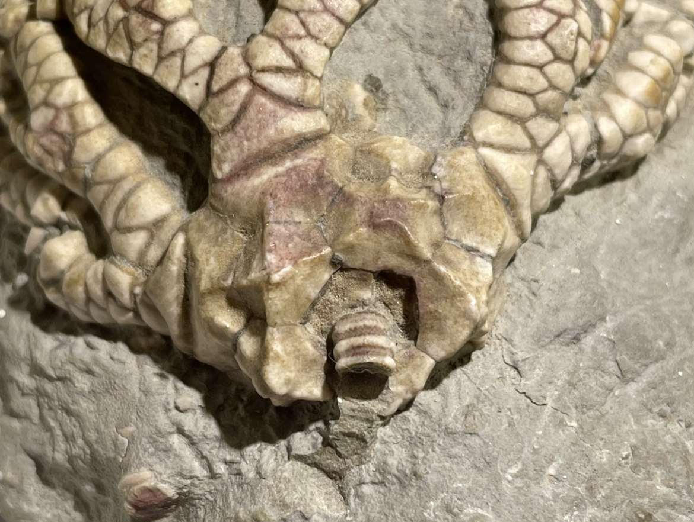
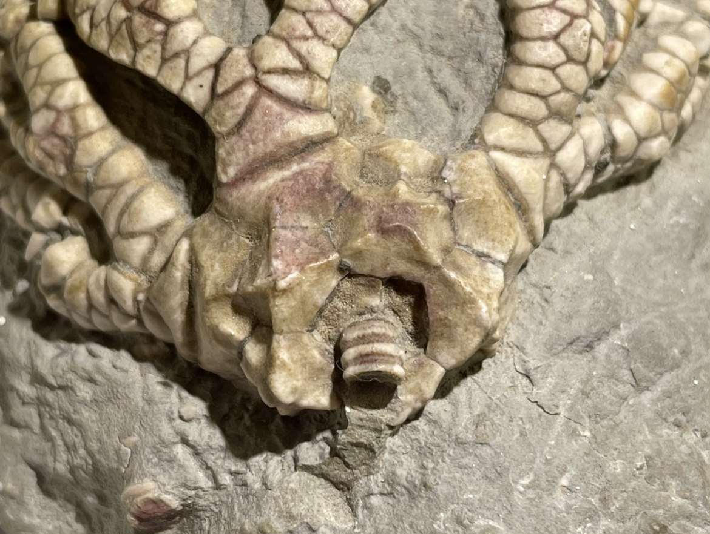

Crinoid
Stellarocrinus virgilensis
• Pennsylvanian
• LaSalle Limestone Member, Bond Formation
• Pontiac/Ocoya, Illinois, USA
Size: 5.5 cm across the arms
Stellarocrinus virgilensis is one of the most common constituents of the LaSalle crinoid fauna, but no less popular or beautiful for it. The genus exhibits very widely-spraddled/well-separated thick biserial arms along with a very shallow, highly-sculpted calyx, which give its crown a very distinct appearance. Its biserial arms also exemplify a trait of so-called "advanced cladids" in the Pennsylvanian, and a departure from the primitive cladid arrangement of uniserial pinnulate arms.
Officially there are two species of Stellarocrinus described from the LaSalle Limestone: S. virgilensis and S. bilineatus, distinguished by calyx ornamentation and the presence/absence of axillary spines on the arms (Strimple & Moore 1971). However I am not personally fully convinced of this distinction, not least because S. bilineatus was described on just a single specimen. Calyx ornamentation is often a variable trait even within a species and generally insufficient to split taxa, and likewise for axillary spines I have seen intermediate forms and various combinations with calyx ornamentation.
 
